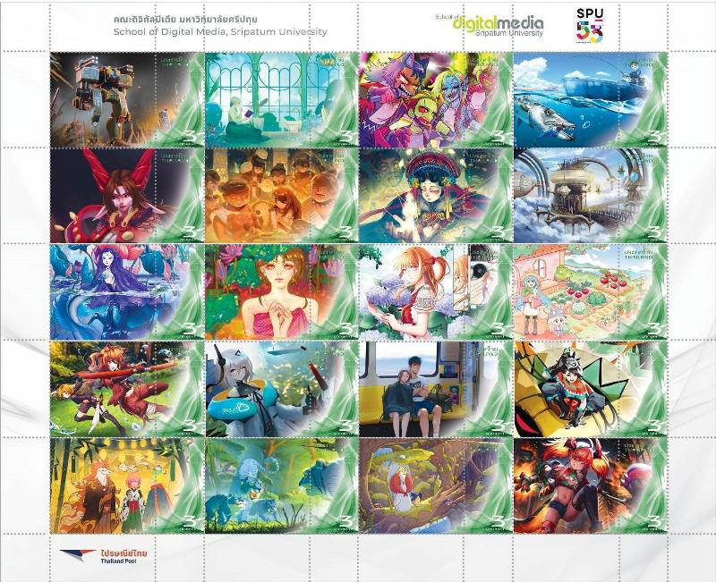

ผลงาน

นี่คือตัวอย่างผลงานดิจิทัลอาร์ตยอดนิยมและหลากหลายรูปแบบที่คุณสามารถนำไปใช้เป็นแรงบันดาลใจได้ครับ ## ผลงานแนวภาพวาดดิจิทัล (Digital Painting & Illustration) * งานคอนเซ็ปต์อาร์ต (Concept Art): ภาพออกแบบตัวละคร ฉาก หรืออาวุธ เพื่อใช้เป็นต้นแบบในการสร้างภาพยนตร์ เกม หรือการ์ตูน * งานแฟนอาร์ต (Fan Art): การนำตัวละครที่มีอยู่แล้วจากอนิเมะ ภาพยนตร์ หรือเกม มาวาดใหม่ในสไตล์เฉพาะตัวของศิลปินเอง * งานแลนด์สเคปเหนือจริง (Surreal Landscapes): ภาพวาดวิวทิวทัศน์ที่ผสมผสานจินตนาการ เช่น เมืองลอยฟ้า ป่าเรืองแสง หรือดวงดาวในอวกาศ ## ผลงานแนวภาพเคลื่อนไหวและ 3 มิติ (Animation & 3D Art) * โมเดลตัวละคร 3 มิติ (3D Character Modeling): การปั้นโมเดลสามมิติที่มีรายละเอียดสมจริง ทั้งผิวสัมผัส เส้นผม และเสื้อผ้า สำหรับงานแอนิเมชันหรือเกม * โมชันกราฟิก (Motion Graphics): การทำให้กราฟิกหรือตัวอักษรเคลื่อนไหวเพื่อใช้ในงานโฆษณา มิวสิกวิดีโอ หรือไตเติ้ลเปิดรายการ * วิดีโออาร์ต (Video Art): การใช้เทคนิคตัดต่อ ผสมผสานแสง สี และเสียง เพื่อสื่อสารอารมณ์หรือแนวคิดเชิงศิลปะ ## ผลงานแนวเทคโนโลยีสมัยใหม่ (Interactive & Generative Art) * ศิลปะจากข้อมูลและ AI (AI & Data Art): การใช้โค้ดคอมพิวเตอร์ โปรแกรม หรือปัญญาประดิษฐ์ในการประมวลผลข้อมูล แล้วสั่งให้สร้างสรรค์ออกมาเป็นภาพกราฟิกหรือลวดลายที่ขยับได้ * ศิลปะจัดวางแบบดิจิทัล (Digital Installation Art): งานศิลปะที่ใช้เครื่องฉายโปรเจกเตอร์ (Mapping) ฉายภาพเคลื่อนไหวลงบนกำแพง พื้น หรือตึกขนาดใหญ่ ทำให้ผู้เข้าชมรู้สึกเหมือนหลุดเข้าไปอยู่ในโลกนั้นจริงๆ คุณอยากให้ผมเจาะลึกรายละเอียดเกี่ยวกับผลงานประเภทไหนเป็นพิเศษไหมครับ หรืออยากให้แนะนำเทคนิคในการสร้างสรรค์งานเหล่านี้?